Health wearable + app · Parsons AI Startup Design Hackathon · 2026
Acuity is an ecosystem for clarity before a cardiac crisis: a bracelet that senses, AI that learns your normal, and an app that tells you when to act. Designed in a 24-hour hackathon.
Problem
Half of people feel warning signs before cardiac arrest. Only one in five act.
Wearables already show heart rate, blood oxygen, and ECG, then leave the meaning to you. Is this serious, or just stress? Most people guess, and wait.
Solution
The bracelet senses, AI interprets, and the app tells you what to do.
Acuity learns your normal from the bracelet and the symptoms you log, flags sustained drift rather than one-off spikes, and turns it into one of three states. Each state comes with a plain next step.
The problem
Half of people feel the warning signs. Only one in five act on them.
The most dangerous moment isn’t the emergency. It’s the uncertainty before it: dizziness, chest discomfort, sudden fatigue, and no way to tell if it’s serious or just stress.
Wearables already track heart rate, blood oxygen, and ECG, then leave the meaning to you. Most people guess, and wait.
Research insights
People notice something is off. They can’t tell if it’s worth acting on.
Kritika’s research kept landing on the same gap. The people at highest risk are also the least equipped to decide: early heart symptoms that don’t fit the textbook, less access to care, and less health literacy.
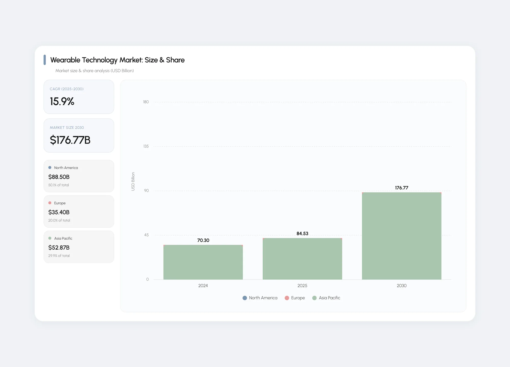
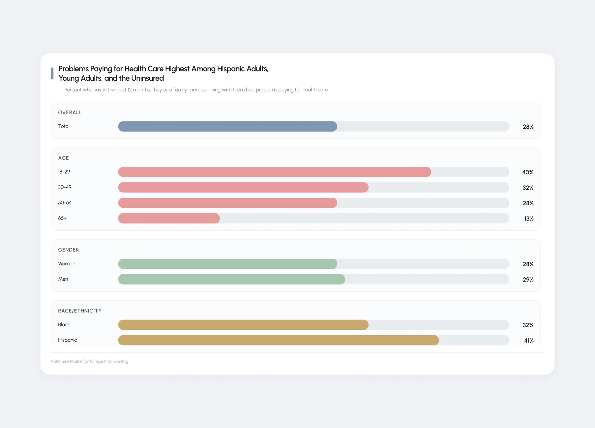
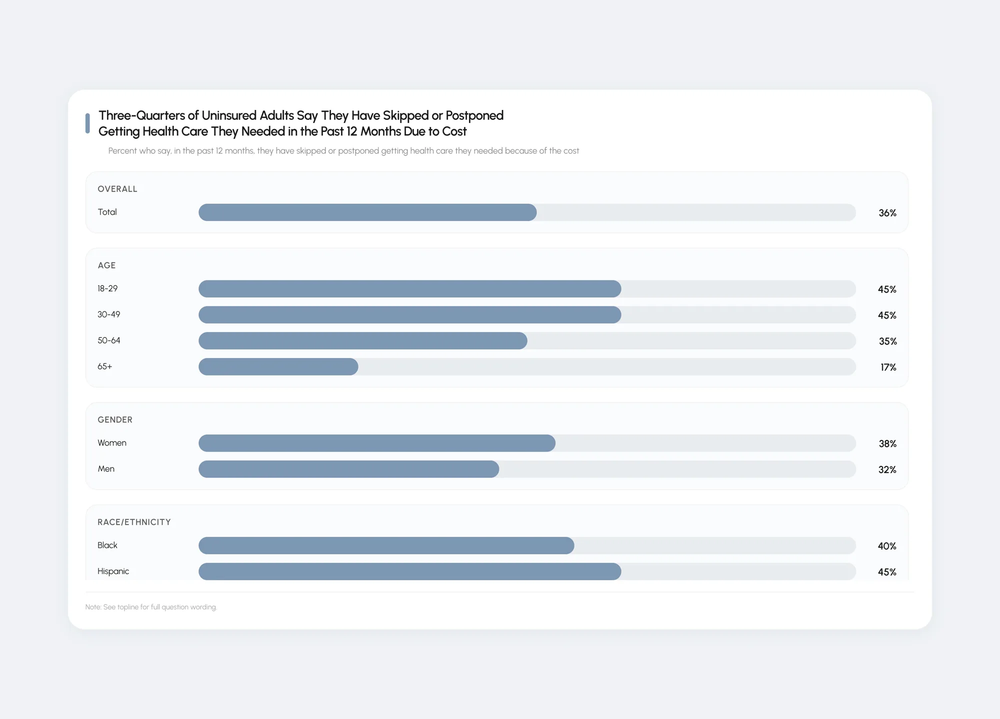
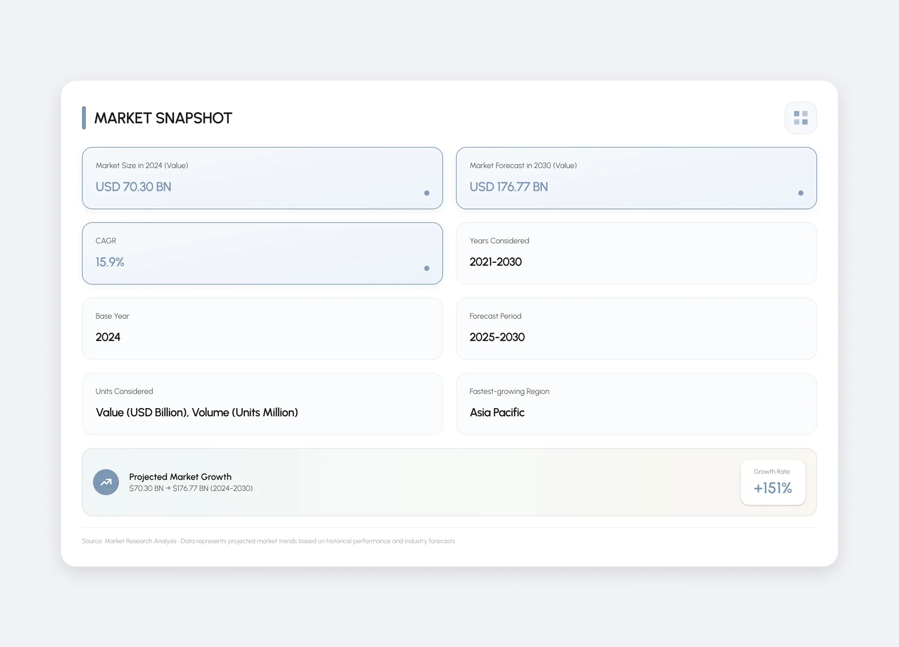
Defining the opportunity
The people least equipped to decide became the people we designed for.
We started with a broad health monitor. Broad tools had shallow impact and missed the people who need monitoring most. So Acuity reaches high-risk patients through insurers and health systems, with real care behind every alert.
And it stays narrow on purpose: no on-demand EMT service, and no medical decisions. The AI flags risk and prompts action. People stay in control.
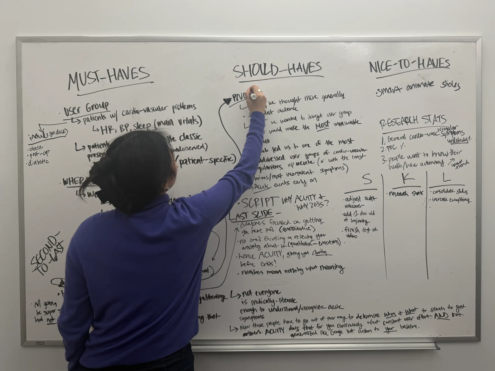
Design exploration
One question on every screen: do I need to act?
I designed the app around three moments: knowing where you stand, understanding an alert, and responding from the wrist. Three states answer the question: Stable, Elevated, Emergent. A yes/no alert either over-triages or misses signals, so each state gets proportionate language and one clear action.
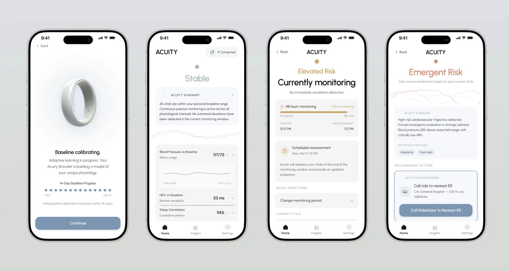
Test & iterate
The value became clear once Acuity stopped showing data and started saying what to do.
Early concepts led with dashboards. Feedback pushed us to cardiovascular symptoms and the decision moment. Sensors alone also left gaps, because symptoms don’t always show up in numbers, so we added a way to log how you feel.
Kritika set the problem, Lucy built the brand and deck, and I designed the app, all in parallel. AI compressed weeks of production into one day: Figma Make for the app, Midjourney for the bracelet, Sora for the demo scenes.
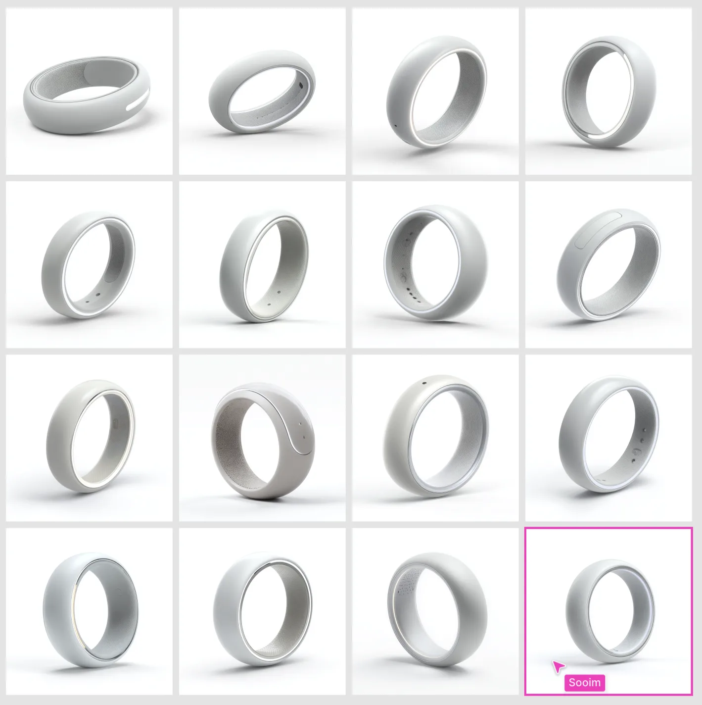
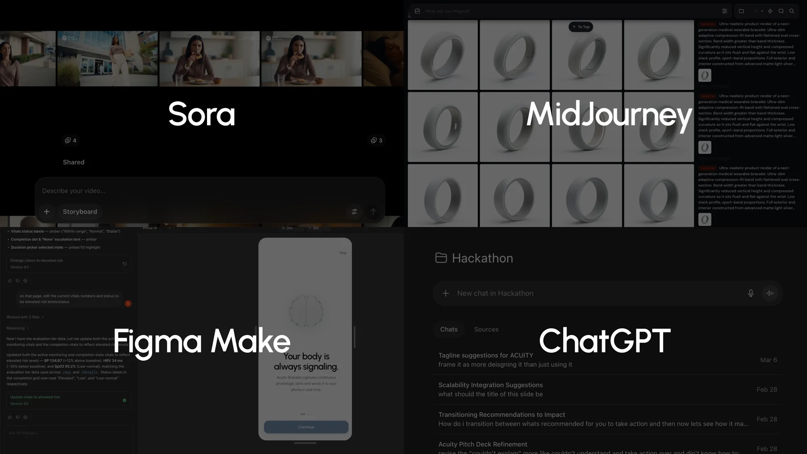
Final product
A decision layer between your body and your next step.
The bracelet senses, AI learns your normal, and the app turns sustained drift into one state and one action. No charts to read. Just whether to act, and what to do next.
Impact
Named one of the standout concepts at the hackathon.
Acuity reframes the wearable from a tracker into decision support, and the insurer channel puts it in front of the people who need it most, with care behind every alert.
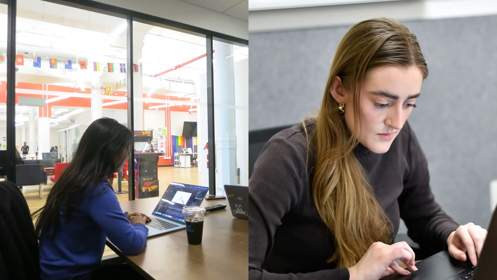
Reflection
24 hours forced one thesis instead of a feature list.
The bracelet isn’t the story. Deciding when to speak, and how urgently, is.
When AI can produce screens, imagery, and video in hours, the designer’s job shifts to judgment: what to cut, and what the system should say.
Read the full write-up on Medium ↗
Takeaway
Health data is finally accurate; the value now is making it clear enough to act on before a crisis.
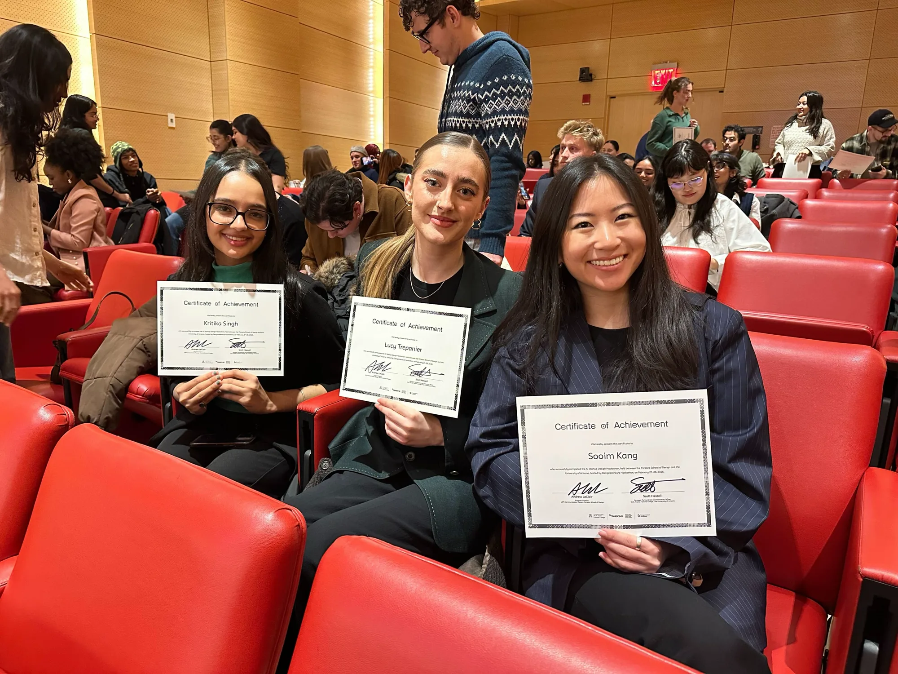
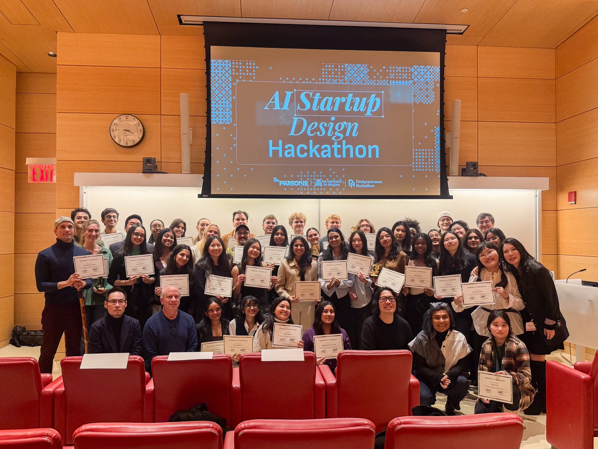
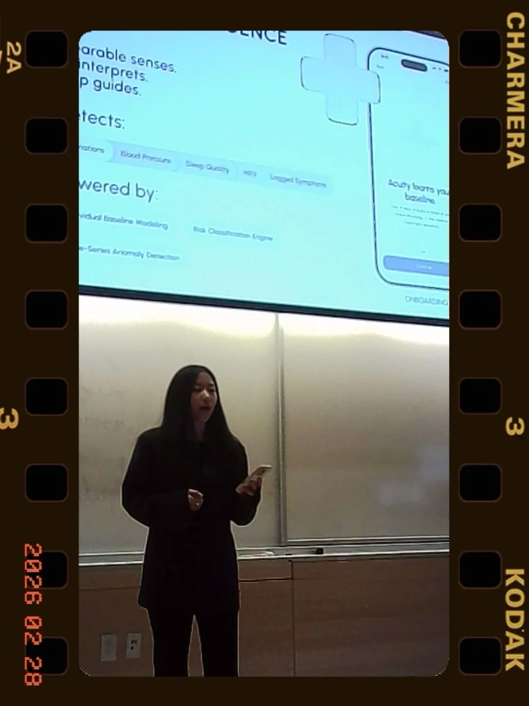
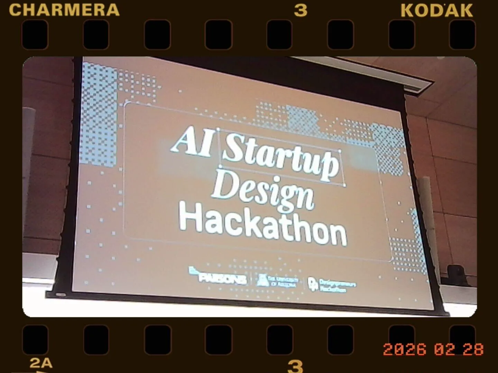